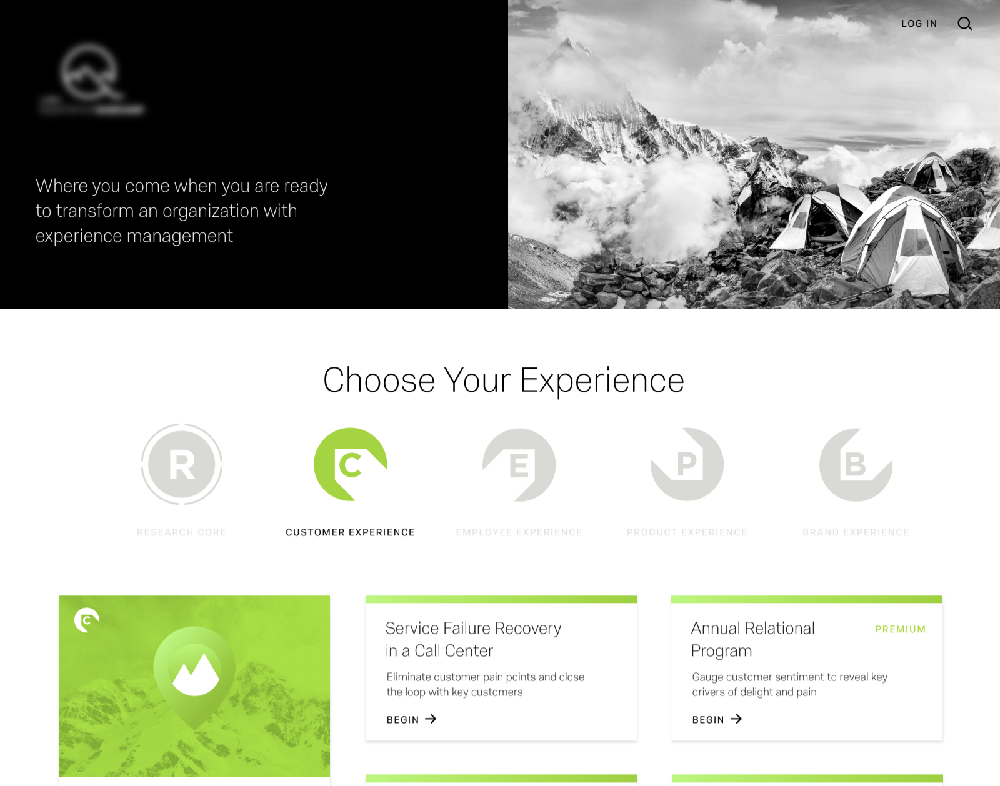
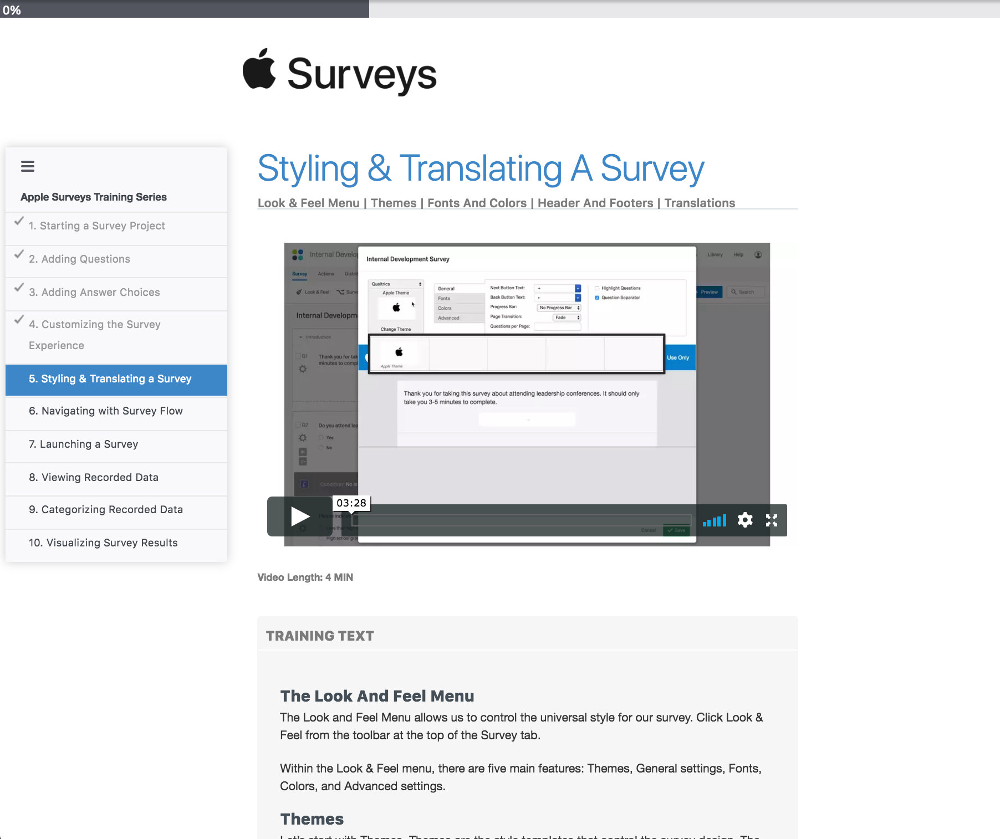

Selected work
The systems I've built, starting with the AI work. After that, the instructional design projects from my M.Ed. that built the foundation.
Professional work
Entrata
Python, GitHub
4-agent AI pipeline
Built in Python and GitHub. Four specialized agents cut standard article updates 62% (8 hours to 3, across 80% of the work) and complex drafting from 14 hours to 90 minutes. That's 8+ hours per cycle back to the team.
Entrata
Zendesk
Knowledge base migration
Zendesk Copenhagen to Lotus migration across 3,500+ articles. 60% ticket deflection, 35% faster content turnaround, and self-service up 25% year over year.
Canopy
Knowledge base, LMS, video, certification
Customer onboarding ecosystem
Built from scratch: knowledge base, LMS, video library, and 2 certification programs. Grew the org from 1 to 30. 30% onboarding efficiency and a 40% churn reduction.

Qualtrics
Skilljar
Experience Basecamp
On-demand learning platform on Skilljar. 70+ digitized courses on guided pathways. $1.6MM in revenue over 24 months.

Certification
Curriculum, assessments, delivery
Certification program design
Certification design covering curriculum, assessments, and proctor-ready delivery. Built to check real customer proficiency.

Earlier work
Graduate instructional design projects, M.Ed. program, University of Utah, 2017 to 2019.
Final project
Utah Foster Care: a full-cycle online training program for prospective foster families, from needs analysis through delivery.
| Project | Phase | File |
|---|---|---|
| Needs analysis | Front-end analysis | |
| Defining goals | Front-end analysis | |
| Flowcharts | Front-end analysis | |
| Storyboarding | Prototyping | |
| Mock-up trials | Prototyping | |
| Prototype | Prototyping | |
| Timeline | Development | XLSX |
| Content development | Development | |
| Assessment design | Development | |
| HCI walkthrough | UX testing | |
| Client interview | UX testing | |
| User testing | UX testing |